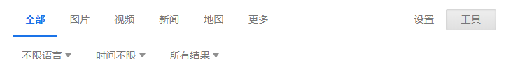

How to Search
by Jimmmy, 2019.01, 本文主要以官方手册Google 优化网页搜索为模板进行了适当增删和修改
常用技巧
- 精确搜索
- 完全匹配，为字词或短语加上引号, 例如
"tallest building"
- 完全匹配，为字词或短语加上引号, 例如
- 模糊搜索
- 搜索通配符或未知字词，在字词或短语中您要放置占位符的地方加上
*，例如"largest * in the world"
- 搜索通配符或未知字词，在字词或短语中您要放置占位符的地方加上
- 近义词搜索
浙江 ~大学
- 逻辑搜索：否
- 在您要排除的字词前加上
-, 例如jaguar speed -car
- 在您要排除的字词前加上
- 逻辑搜索：或
- 在各个搜索查询之间加上“
OR”, 例如marathon OR race
- 在各个搜索查询之间加上“
- 特定网站搜索
- 在相应网站或域名前加上“
site:”, 例如site:youtube.com或site:.gov，注意没有空格
- 在相应网站或域名前加上“
- 相关网站搜索
- 在已知网址前加上“
related:”, 例如related:time.com
- 在已知网址前加上“
- 特定文件类型
安卓教程 filetype:pdf
- 数字范围内搜索
- 在两个数字之间加上
..，例如speed limit 50..120 - 在两个数字之间加上
..，例如camera $50..$100
- 在两个数字之间加上
- 在网页标题, 链接和主体中搜索关键词
intitle:后台登录注意不要有空格- 想匹配标题关键字是
intitle:, 如果想匹配网址链接inurl:, 如果是主体的话是intext:, 比如你可以试试intitle:评测
- 组合搜索
- 即结合运用上述所有技巧
site:zhihu.com 控制 -情绪 -媒体
其他技巧
- 搜索社交媒体
- 在用于搜索社交媒体的字词前加上
@, 例如@twitter
- 在用于搜索社交媒体的字词前加上
- 搜索特定价格
- 在数字前加上
$, 例如camera $400
- 在数字前加上
- 搜索 # 标签
- 在字词前加上
#, 例如#throwbackthursday
- 在字词前加上
- 获取网站详情
- 在相应网址前加上“
info:”
- 在相应网址前加上“
- 查看网站的 Google 缓存版本
- 在相应网址前加上“
cache:”
- 在相应网址前加上“
高级搜索
-
Advanced Search : https://www.google.com/advanced_search
-
高级设置和高级搜索点击工具

参考文献
- Google 优化网页搜索
- How to use search like a pro: 10 tips and tricks for Google and beyond
- 程序员应该掌握的10个搜索技巧